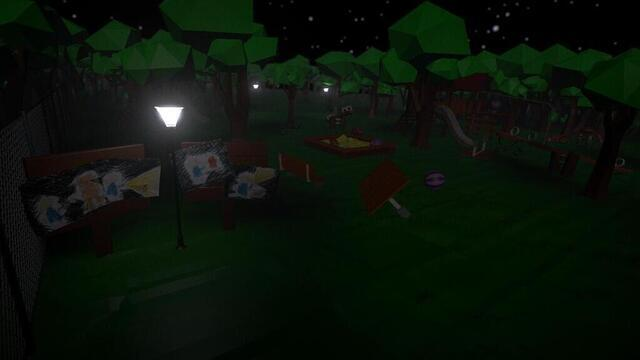
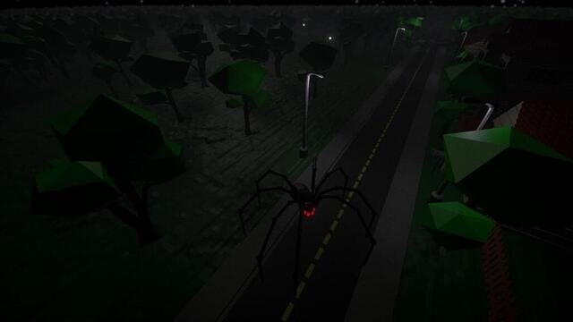
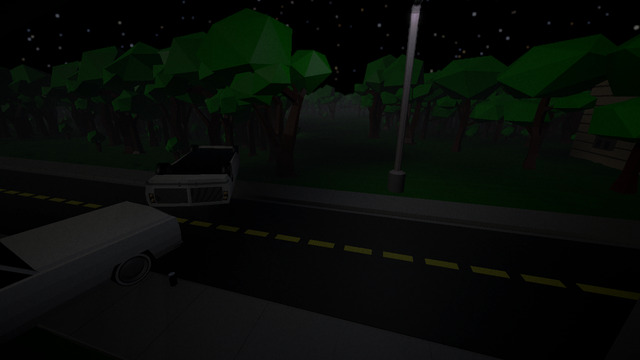
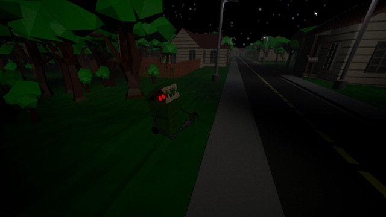
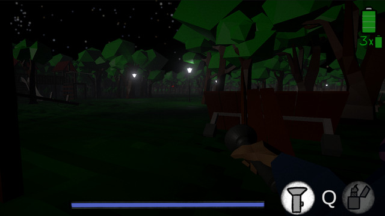

<div id="ajax-page" class="ajax-page-content">
    <div class="ajax-page-wrapper">
        <div class="ajax-page-nav">
            <div class="nav-item ajax-page-prev-next">
                <a class="ajax-page-load" href="goddamnhell.html"><i class="lnr lnr-chevron-left"></i></a>
                <!-- <a class="ajax-page-load" href="lurkersinthenightlight.html"><i class="lnr lnr-chevron-right"></i></a> -->
            </div>
            <div class="nav-item ajax-page-close-button">
                <a id="ajax-page-close-button" href="#"><i class="lnr lnr-cross"></i></a>
            </div>
        </div>

        <div class="ajax-page-title">
            <h1>Lurkers In The Nightlight</h1>
        </div>

        <div class="row">
            <div class="col-sm-12 col-md-12 portfolio-block">
                <!-- Project Description -->
                <div class="project-description" style="margin-left: 0px; margin-bottom: 30px;">
                    <div class="block-title">
                        <h3>Description</h3>
                    </div>
    
                    <p class="">This project was developed for the <a href="https://itch.io/jam/brackeys-7">"Brackey's Game Jam" </a>. We had a total of 7 days for development. The topic of this Game Jam was "It is not real".
                    </p>
                    <p>
                        The idea is a small horror-adventure game, in which you need to run through a forest to get home. On the way you will face plenty of monsters that want to kill you. To avoid dying in case of getting hunted, you can use your torchlight to cutify them. Big spiders turn into cute small spiders, big bears turn into teddy bears etc.
                    </p>

                    <br /> 
                    <p>
                        My tasks were the development & implementation of:
                    </p>
                    <ul>
                        <li>First-Person-Controller</li>
                        <li>Game Mechanics</li>
                        <li>Music</li>
                        <li>Level Design</li>
                    </ul>
                    <!-- /Project Description -->
                </div>
                <!-- Project Description -->
            </div>
        </div>


        <div class="row">
            <div class="col-sm-8 col-md-8 portfolio-block">
                <div class="owl-carousel portfolio-page-carousel">
                    <div class="item">
                        
                    </div>
                    <div class="item">
                        
                    </div>
                    <div class="item">
                        
                    </div>
                    <div class="item">
                        
                    </div>
                    <div class="item">
                        
                    </div>
                </div>

                <script type="text/javascript">
                    jQuery(document).ready(function($){
                        $('.portfolio-page-carousel').imagesLoaded(function(){
                            $('.portfolio-page-carousel').owlCarousel({
                                smartSpeed:1200,
                                items: 1,
                                loop: true,
                                dots: true,
                                nav: true,
                                navText: false,
                                margin: 10,
                                autoHeight:true
                            });
                        });
                    });
                </script>
            </div>

            <div class="col-sm-4 col-md-4 portfolio-block">
                <!-- Project Description -->
                <div class="project-description" style="margin-left: 0px;">
                    <ul class="project-general-info">
                        <li><p><i class="fa fa-user"></i> Stefan Minikel, Diana Weber, Kevin Weber, Martin Köhler, Dillon Metzler, Ronja T., Jonas M.</p></li>
                        <li><p><i class="fa fa-globe"></i> <a href="https://stjpa.itch.io/lurkers-in-the-nightlight" target="_blank">itch.io/lurkers-in-the-nightlight</a></p></li>
                        <li><p><i class="fa fa-calendar"></i> 20.02.2022 - 27.02.2022</p></li>
                    </ul>
                    <!-- /Project Description -->

                    <!-- Technology -->
                    <div class="tags-block">
                        <div class="block-title">
                            <h3>Ressources</h3>
                        </div>
                        <ul class="tags">
                            <li><a>Unity</a></li>
                            <li><a>blender</a></li>
                            <li><a>Wwise</a></li>
                            <li><a>FL Studio 21</a></li>
                        </ul>
                    </div>
                    <!-- /Technology -->
                </div>
                <!-- Project Description -->
            </div>
        </div>
    </div>
</div>